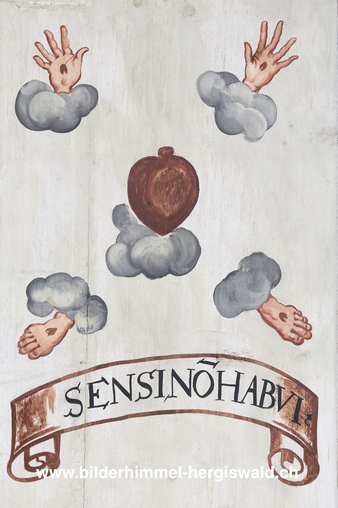

Die fünf Wunden Christi (Süd 55)

Blutig durchbohrte Hände und Füsse sowie ein Herz schweben, in Kreuzform angeordnet, auf kleinen Wolken. Sie stehen für die fünf Wunden Christi bei der Kreuzigung – die Nagelwunden und die Seitenwunde –, die in der christlichen Kunst häufig dargestellt werden. Hier verweisen die Wundmale allerdings auf Marias Zeugenschaft und Mitleiden unter dem Kreuz. Denn sie ist es, die aus dem Motto spricht und erklärt: SENSI, NON HABUI, «Ich habe die Wunden gefühlt, obwohl nicht selbst gehabt». Damit ist gemeint, dass die Leiden Christi zugleich die Leiden Marias sind. Als Schmerzensmutter hat sie Anteil am Erlösungswerk ihres Sohnes.